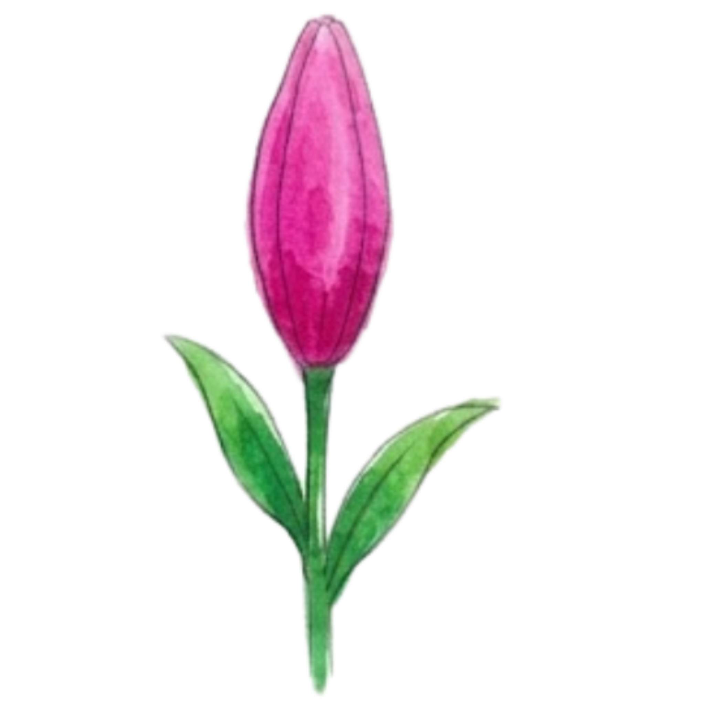

Ding-dong! ada pakett nih buat the only one cintanya Shèanadin.
[ tekan bunganya biar mekar ]

happy bf day to the boy who holds my whole heart. terima kasih ya udah sabar banget hehe, selalu bikin aku happy, dan semangat menjalani hari-hari jelek ini.
having you around just makes everything feel so much apa ya istilahnya? hmm so much loved dan lighter? xixi tetep jadi kesayangan aku ya? jangan kemana-mana!
semangat juga ya kuliahnya! semoga dilancarkan terus semua urusannya, dimudahkan prosesnya, dan cepet lulus jadi sarjana dengan selamat, sentosa, plus tetap waras, wkwk. i'm endlessly proud of you lho, and i'm so, soooo lucky to call you mine (upcie). let's stay side by side for a really long time, okay? i love you so much!
with love,
your lychee ♡